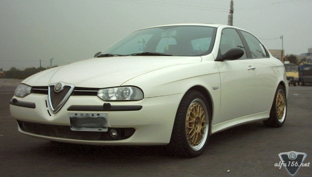
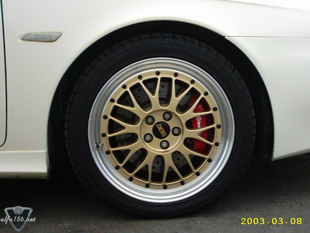
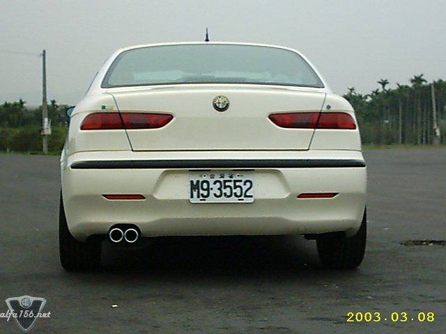
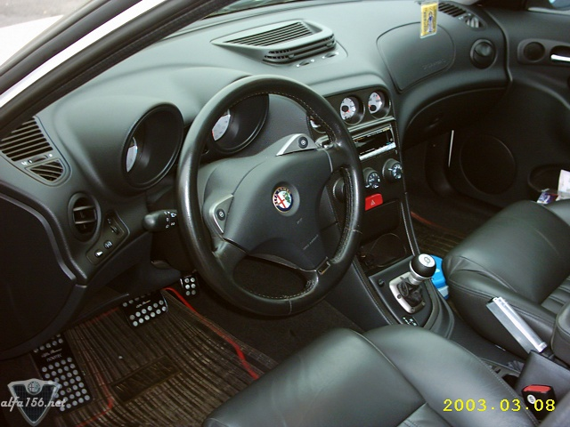

Selespeed (manufactured in June,1999. milage:84400km). Tuned parts: 1.Supersprint complete exhaust system
(manifold,catalyst,central pipe and muffler), Eibach pro suspension kit and antiroll bar, Brembo brake
kit (with 320mm front disc), Sparco brake pads (rear), BBS LM two piece forged alloy wheels (made in Japan),
Bridgestone RE01 tyres, K&N air filter, Novitec accelerator&brake&rest pedals and Novitec side bake.
Owned by Kimi Liu, located in Taiwan.



![[Prev]](bw_prev.gif)
![[Index]](bw_index.gif)
![[Next]](bw_next.gif)